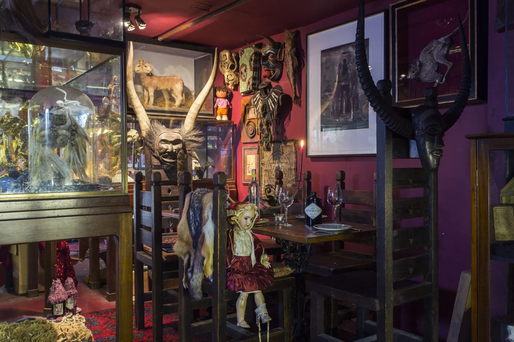
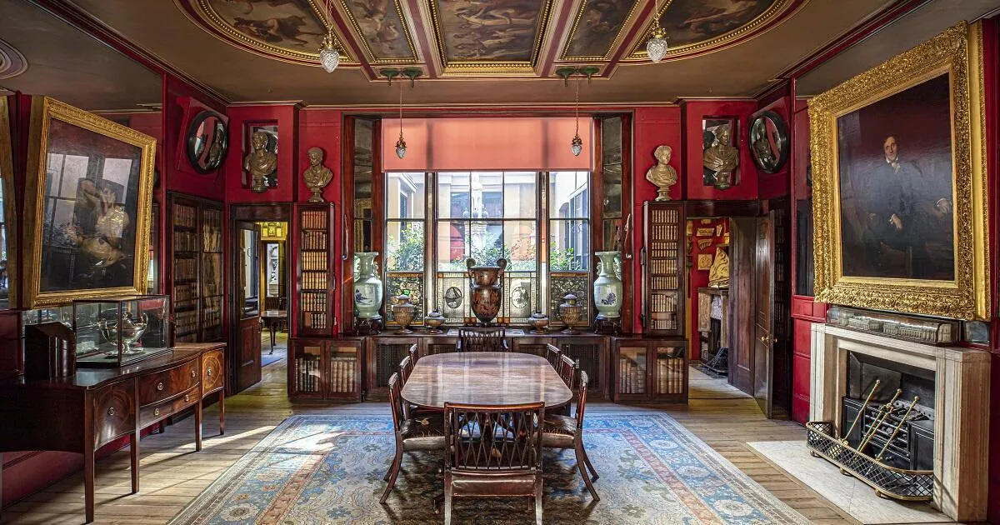
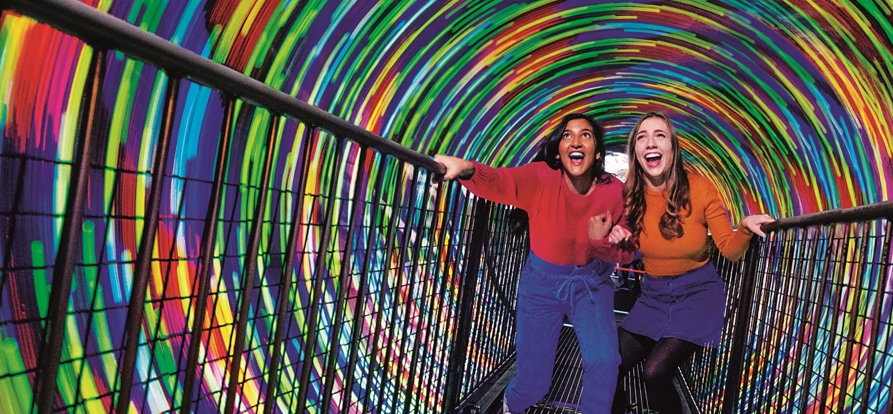
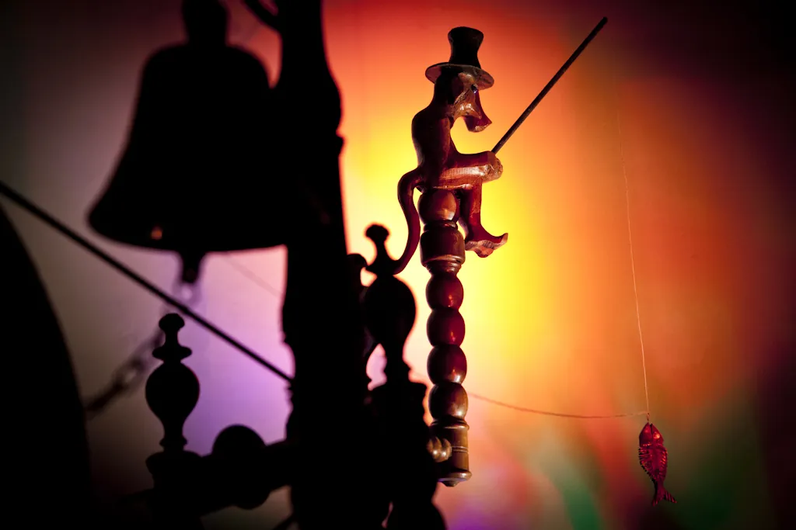
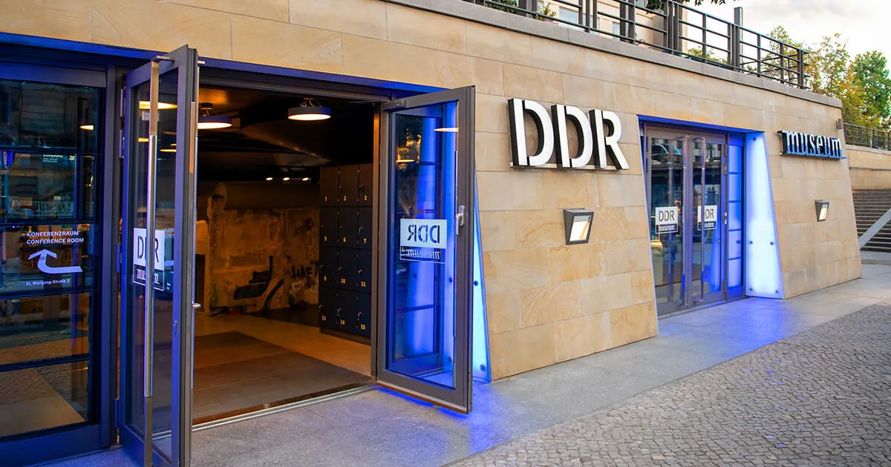
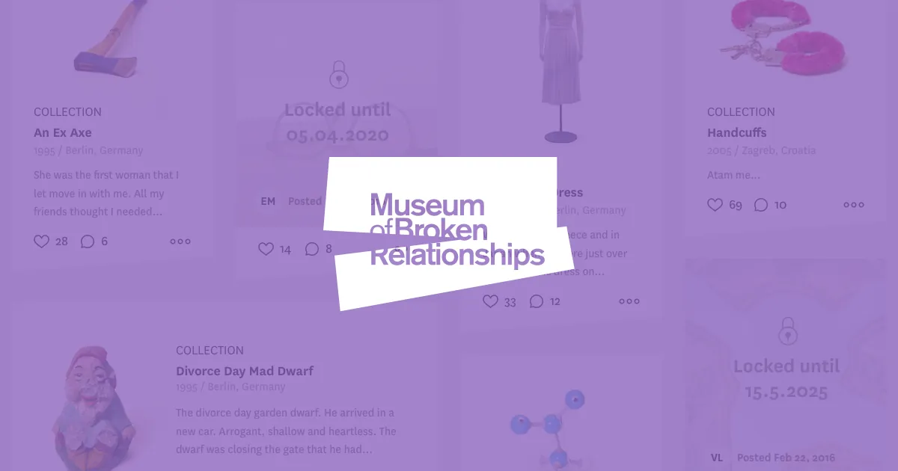
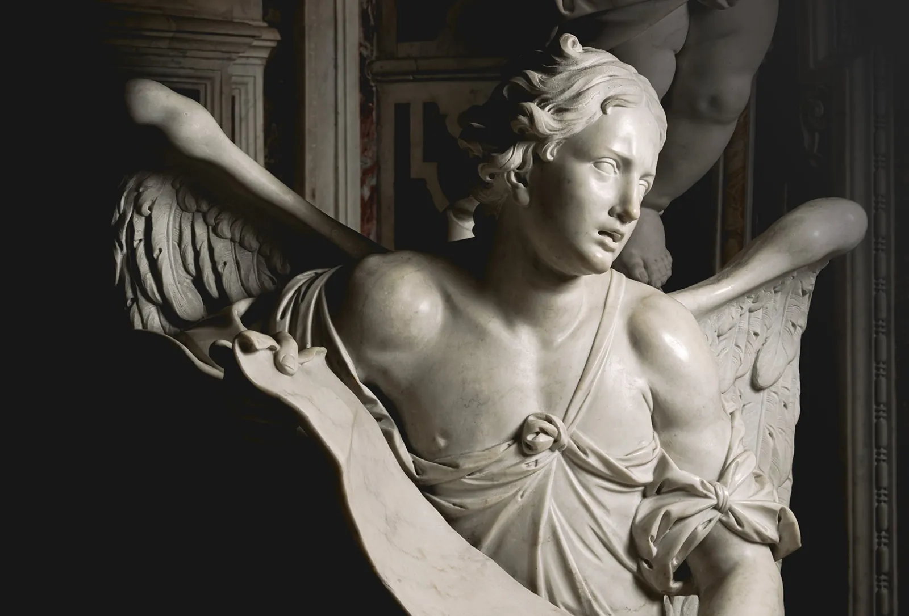

84 sources · 34 cities · expedition depth · 2026
Offbeat Museums & Quirky Half-Day Finds in Europe
Stockholm Toy Museum
~40,000 toys in a 2,500 m² former torpedo workshop underground on Skeppsholmen.[4]
Vrak – Museum of Wrecks
Interactive Baltic shipwreck archaeology on Djurgården — sunken ships, all immersion.[3]
Spritmuseum & Dala-horse
The Museum of Spirits, plus a tiny Dala-horse museum tucked inside a souvenir shop.[2]
Glyptotek Nasothek
A wall of 100+ marble noses lopped off statues during 19th-century "restoration."[1]
Barbie Museum
4,000+ Barbies — the only collection of its kind in Denmark, by appointment.[1]
Geological "One Room"
A single room: taxidermied polar bear, fossilised plants and pickled specimens.[1]
Mini Bottle Gallery
~50,000 miniature bottles across three storeys — some holding fruit, worms or mice — plus a "horror room." Billed as the only museum of its kind.[5]
Norsk Tryllemuseum
Posters, props and gear of Norwegian magic; opens Sundays 1–4pm only with a 2pm show.[6]
Multisensory "Taste Matters" exhibition; one ticket also covers the Theatre Museum and Museum of Photography in the same Cable Factory complex.[7]
Hotel Viru KGB Museum
A secret 23rd-floor radio centre from which the KGB spied on foreign hotel guests in the Soviet era.[10]
KGB Prison Cells
The preserved Soviet basement prison at Pagari 1 — six cells and a solitary-confinement cell.[12]
Kalev Marzipan Museum
Watch marzipan figures hand-painted inside Maiasmokk, Estonia's oldest café.[11]

specimen of note · curiosity cabinet
Two-headed lambs, mermaid skeletons, mummified fairies — and the gold-plated skull of a hippopotamus once owned by Pablo Escobar.[13][14] Absinthe parlour upstairs.

specimen of note · frozen mansion
An architect's mansion left exactly as it was ~200 years ago — crammed with curiosities, including pharaoh Seti I's sarcophagus.[15]

specimen of note · optics / illusion
Scotland's oldest purpose-built attraction (est. 1835): five floors of illusions plus a live camera obscura projecting the city onto a table.[16][17]
William Burke's death mask, a book bound in his skin, and pathology specimens — ranked 8th-strangest museum in Europe.[19]

specimen of note · kinetic sculpture
Scrap-metal "kinemats" lurch to light and music, telling tales of Communist Russia's past.[21] 45-minute ticketed shows.[22]
Pickled organs, deformed-animal specimens and dinosaurs in a Gothic-revival university hall.[20]
The "people's museum" of 20th-century Dublin, seen only via a sharp 29-minute guided tour.[23]
Dublin's first public library (1707) — atmospheric dark-wood stalls and chained books.[24]
National Leprechaun Museum
Walk through oversized furniture to feel leprechaun-sized; evening "DarkLand" folklore tour.[25]
Sewer Museum
A stretch of the real sewage network narrated by an audio guide voiced by two actual sewer workers.[31]
Clockarium & Comics Figurines
A museum entirely of Art Deco ceramic clocks; nearby, rooms of Smurfs, Tintin, Spirou, manga and Marvel.[32]
The two oldest printing presses on earth and the only original Garamond letter dies.[35]
Snijders & Rockox House
Two adjoining 17th-century patrician homes shown as a lived-in house (iPad guide), not a gallery.[36]
Red Star Line Museum
Millions of European emigrants who sailed Antwerp→North America, in the line's authentic dockside buildings.[37]
The namesake of this tier: interactive magic in cellar vaults spanning voodoo, shamanism, astrology and alchemy.[84]
300+ exhibits on gaming since the 1950s, with a playable retro arcade.[38]

specimen of note · cold-war immersive
Hands-on East German daily life — sit in a Trabi, tour a recreated GDR flat, get "surveilled."[39]
A reusable trapdoor coffin and anti-premature-burial "save-yourself" bells, at the Central Cemetery.[42]
The world's only public globe museum — 240 Earth, celestial, lunar and Mars globes.[43]
One of the world's oldest language museums — 500+ constructed languages. Same building, same ticket as the Globe Museum.[44]
Snow Globe · Third Man · Clock
Perzy family invented the Viennese snow globe; the Third Man Museum (2,500 exhibits, Sat only); Clock Museum (~700 working clocks).[45]
Moulagenmuseum (Zurich)
One of the world's largest collections of lifelike wax casts of skin diseases — leprous noses, eye ulcers, ear abscesses.[48]
Spielzeug Welten & Henkermuseum (Basel)
World's largest teddy-bear collection (2,500); nearby, a hangman's museum of execution instruments.[49]
Museum Tinguely (Basel)
World's largest collection of Jean Tinguely's kinetic sculptures — whirring machines at the push of a button.[50]
Sex Machines Museum
World's only museum of mechanical erotic devices (~200 items), with a vintage-erotica cinema inside.[53][54]
Speculum Alchemiae
A genuine 16th-century alchemy lab with hidden tunnels, on half-hourly English guided tours.[53]
Chamber Pots & Toilets Museum
2,000+ items of human hygiene history in one improbable museum.[53]

specimen of note · emotional history
Donated mementos of failed relationships worldwide, each paired with its breakup story. The original; widely imitated but never bettered.[58]
Museum of Illusions
The flagship of a now-global chain — optical displays where you become the exhibit.[59]
Krakow Pinball Museum
80+ machines from the 1950s, unlimited free play, in a 15th-century cellar.[60]
Pharmacy Under the Eagle
The only pharmacy in the wartime Krakow ghetto — a sobering Holocaust exhibit with three historic films.[61]
Bricks & Figs Museum
Massive LEGO dioramas and pop-culture figures — a lighter counterweight to Krakow's heavier history.[62]
Neon Museum
~50 preserved Cold War neon signs in the Praga district's Soho Factory.[63]
Polish Vodka Museum
Five interactive galleries inside an 1897 distillery; every ticket includes a guided tasting.[64]
Pinball Station
100+ machines (60 restored), one wristband for all-day unlimited play with re-entry.[65]
Grigore Antipa Natural History Museum
Lifelike dioramas, a recreated 11m cave with bat colonies, and a giant Deinotherium elephant skeleton.[68]
Capuchin Crypt
Themed chambers decorated with the bones of 4,000+ friars — skulls, pelvises, leg bones — and rarely crowded.[71]
Museum of Holy Souls in Purgatory
A one-room display of scorched "handprints" said to be left by souls reaching the living, inside a Prati church.[72]

specimen of note · baroque horror
The Veiled Christ — and the genuinely eerie "anatomical machines": two 18th-century bodies with preserved circulatory systems rendered in metal wire.[73]
Fontanelle Cemetery
An ossuary cave at the heart of the Neapolitan cult of adopting and naming anonymous skulls. Reopened 18 Apr 2026.[74]
A 19th-century aristocratic house frozen with 50,000+ objects — armour, weapons, clocks, tapestries.[77]
Museum of Romanticism
The material world of Spain's Romantic era (1833–1868) recreated in a period mansion.[79]
Sorolla Museum
The painter's house and self-designed garden — closed for renovation, reopening during 2026.[78]
The world's only tile museum — 500 years of azulejo in a former convent, including a 23m pre-1755 panorama of Lisbon.[80]
Aljube Museum — Resistance & Freedom
A former dictatorship-era political prison beside the Sé Cathedral, now a museum of resistance to the Salazar regime.[82]
Museum of Greek Folk Musical Instruments
1,200+ traditional instruments and shadow puppets over three Plaka floors, with listening headphones throughout — a quiet, rarely-crowded hour.[83]
⚠ Check before you go — 2026 status